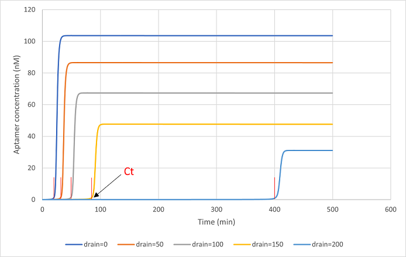

Simulation
Simulation Items
Before the experiments of electrophoresis, we made predictions about the stability of each DNA strand and the possible conformations it could take. We also simulated the threshold values and amplification rates for the amplification mechanism inside the molecular robot.
Thermodynamic simulation
The thermodynamic stability of the DNA strand was investigated using DINAMelt.
The Tm values for hybridization of DNA Aptamer (Pool99) and Output 1 and the predicted heat capacity of the complex are shown below.
Fig.1 The Tm values for hybridization of DNA Aptamer (Pool99) and output 1 (NaCl:40 mM MgCl2:12.5 mM)
The predicted Tm value was 66.0°C. This result confirms that thermal dissociation of output1 from DNA Aptamer (Pool99) does not occur at 37°C.
Structural prediction of DNA Aptamer
The prediction of secondary structure of DNA Aptamer (Pool99) was performed using NUPACK. The results are shown below.
Fig.2 The predicted secondary structure of DNA Aptamer (Pool99).
Similarly, the prediction of secondary structure for the Aptamer sensor (DNA Aptamer (Pool99) + output 1) was conducted. The results are shown below.
Fig.3 The predicted secondary structure of Aptamer sensor.
We also used 3dRNA/DNA to predict the tertiary structure of DNA Aptamer (Pool99). The result is shown below.

Fig.4 The predicted tertiary structure of DNA Aptamer (Pool99).
The design of amplification circuit
The PEN toolbox is used as a mechanism to detect the input from the sensor and produce Aptamer outputs. Since the PEN toolbox requires consideration of the interaction between the DNA strand and the enzyme in the reaction process, each reaction is non-linear. In designing the amplification circuit, a schematic design of the reaction system was performed using DACCAD.
DNA Artificial Circuits Computer-Assisted Design (DACCAD) is software developed for the purpose of quickly and easily designing complex circuits such as the PEN toolbox using directed graphs. When simulating with DACCAD, we predict changes in signal concentration based on the following theory.1)
\begin{eqnarray} \frac{d[s]}{dt}=\sum_{{tmp}\in{I_s}}{φ}_{tmp}^{in}(t)+\sum_{{tmp}\in{O_s}}{φ}_{tmp}^{out}(t)-{exo}_s(t)・[s](t) \end{eqnarray}The directed graph displayed by DACCAD is shown below.
Fig.5 The directed graph on DACCAD screen(S1: Aptamer, S2: Input from aptamer sensor).
For the signal from the sensor and the DNA strand of drain, we added the reaction by using COPASI. COmplex PAthway Simulator (COPASI) is an application software for simulation and analysis of biochemical networks and dynamics.
Dissociation constants were determined from the Gibbs free energy for each DNA strand according to the number of bases of the strand. Each Gibbs free energy was predicted using DINAMelt.
The concentration of Input 1 used in the simulation was estimated under the condition of 5 nM of quormone concentration, which is considered to form biofilms. Assuming that the diameter of "Quorum Hacker" is 20 µm and that 0.001% of the DNA aptamers are present relative to the total number of lipid molecules on the GUVs surface, the concentration of DNA aptamers on the lipid bilayer surface relative to the volume of GUVs is estimated to be 540 nM. Solving the equation below using the reported dissociation constant for DNA aptamers, Kd = 28.47, we find that under a 5 nM quormone concentration, approximately 80 nM of DNA aptamers react, releasing an equivalent amount of Output 1. Since the amount of output1 actually recognized by the transmembrane signalling mechanism is decayed by auto-diffusion, the simulation was performed at concentrations less than 1/100 of the released concentration.
[AB] = [C] 1 + Kd [A]The following demonstrates a circuit in which 0.5 nM input is detected, resulting in amplification of aptamer.
The initial concentrations of template2to1, which outputs aptamer by the input, template1to1, which amplifies input, and the initial concentrations of input were set at 10 nM, 100 nM, and 0.5 nM, respectively. Then, COPASI was used to simulate the change in concentration of aptamer at different drain concentrations.
Fig.6 Change in aptamer concentration with different drain concentrations
Ct in Fig.6 represents the amplification start time of aptamer at each drain concentration. The start time of Aptamer amplification increased with increasing drain concentration, and the concentration remained constant after Ct.
Threshold setting
The concentration of drain is determined from the results of changes in the concentration of aptamer from the start of the reaction. A graph was created with 1/Ct on the vertical axis and the concentration of drain on the horizontal axis.2)
Fig.7 The scatter plot of 1/Ct with different drain concentrations.
From the above, the threshold drain concentration was set to 200 nM.
Next, we simulated the changes in time of aptamer generation when different Inputs were given, when the concentration of DRAIN was set to 200 nM.
Fig.8 Change in aptamer concentration with different input concentrations
The result above confirms that drain plays a role as threshold value.